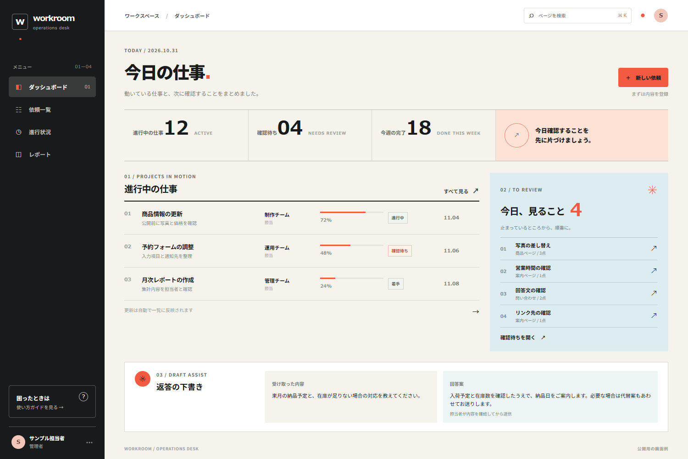

お客様と話し、仕様を決める
使う人、困っていること、今の手順を聞き取ります。決まっていない部分は、選択肢と影響を整理して共有します。
IT ENGINEER / PORTFOLIO
既存の業務システムの調査、仕様調整、Laravelでの改修・データ移行を担当します。関係者と直接やり取りし、設計、実装、検証、公開まで進めます。
週5日・フルリモート・長期の準委任案件を探しています。11月から参画できます。


01 / WHAT I DO
「何を作ればいいか、まだ決まっていない」でも大丈夫です。今の仕事の流れを聞き、まず何を変えるか一緒に決めます。
使う人、困っていること、今の手順を聞き取ります。決まっていない部分は、選択肢と影響を整理して共有します。
画面、コード、DB、CSVを照らし合わせて調査。改修やデータ移行を、今の業務を止めない順序で進めます。
画面・API・権限・データの保存方法を設計。外部サービスやAIを使う場合も、運用する人の確認手順を考えます。
画像、音声、端末保存、サーバーとの通信まで。iOS・Android両方でのストア公開と更新を経験しています。
02 / SELECTED WORK
実務で担当した改修・データ移行と、自分で開発・運用するサービスを紹介します。
PROJECT 01 — DATA MIGRATION / 準委任
仕様を整理するところから、
移行後の検証まで。
旧環境と新環境のデータ項目を照合し、移行仕様を整理。Laravelによる移行処理の実装、移行後の整合性確認、不整合の報告と修正、関係者との仕様調整を担当しました。
経歴書を依頼する ↗PROJECT 02 — LARAVEL MAINTENANCE
現行機能を保ちながら、
更新する。
既存コードとバージョン差分を調査し、機能を移植。認証機能と既存不具合の修正、レビュー対応から納品まで担当しました。
経歴書を依頼する ↗LIVE SERVICE
03 / MOBILE APPS
画像、音声、端末保存、オンライン連携。異なる機能を持つ3本を、iOS・Androidで公開しています。
01 / IMAGE
 02 / AUDIO
02 / AUDIO
 03 / ONLINE
03 / ONLINE
SCREEN STUDY
情報と操作をどう整理するか。Next.jsで制作した画面例です。

04 / SKILLS
Next.js、C#/WPF、Railsなど、案件に合わせて技術を習得し、納品してきました。
ヒアリング、要件整理、仕様調整、顧客対応、JIRA、Slack
PHP、Laravel、Next.js、TypeScript、Rails、Vue、API、MySQL
Flutter、iOS・Android、画像・音声、端末保存、ストア公開
C#、WPF
Pest、PHPUnit、機能テスト、移行後データの検証
AWS、Terraform、Linux、Docker、Nginx、GitHub Actions
05 / HOW I CHOOSE
先に言語やDBを決めません。サーバー、今の仕組み、更新する人、費用を見てから選びます。
動いている言語、DB、公開手順を確認。まず必要なところから直します。
既存構成と必要な運用を確認し、App Runner、ECR、RDSなどを使い分けます。構成の管理にはTerraformも扱います。
端末で何を保存し、サーバーと何をやり取りするか。使い方から設計します。
06 / PROFILE
子どものころ、父にもらったPC-98で算数やひらがなのゲームを遊び、最後は分解しました。HTML、CGI、PHP、MySQLを経て、今はWebサービスやスマホアプリを作っています。
07 / CONTACT
新しく作る話も、今あるものを直す話も。何が必要か、一緒に整理するところから始めます。